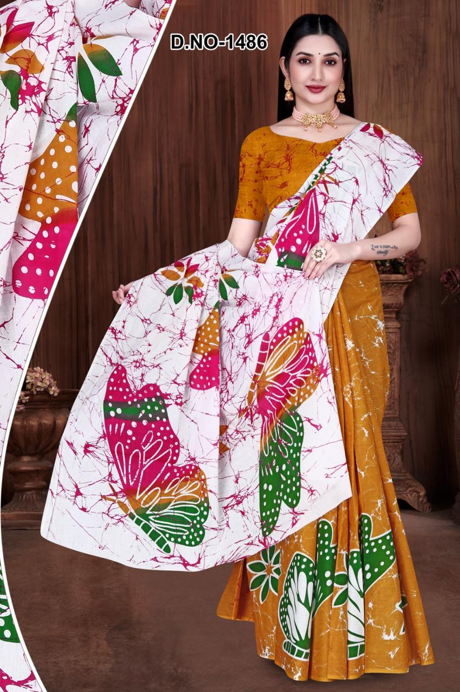

Classic Batik Sarees
Exquisite handcrafted batik sarees featuring traditional Indian motifs and contemporary designs in premium fabrics

Exquisite handcrafted batik sarees featuring traditional Indian motifs and contemporary designs in premium fabrics

Premium mulmul cotton batik fabric known for its softness, breathability, and intricate batik patterns

Modern interpretations of traditional batik with bold patterns and vibrant colors for the fashion-forward
Mulmul Cotton Batik Saree
Traditional Batik Saree
Designer Batik Fabric

Mulmul Cotton Batik

Handcrafted Batik Saree

Batik Fabric

Premium Batik Saree

Lightweight Mulmul Batik
Shoolin Textiles is a Jaipur-based textile manufacturing and wholesale company dedicated to supplying premium Sri Lankan-style batik sarees and fabrics to boutiques, wholesalers, and retailers across Sri Lanka. With deep roots in India’s textile heritage and a strong understanding of Sri Lanka’s evolving fashion preferences, we bring together authentic craftsmanship, modern batik artistry, and reliable export services—all under one roof.
For over the years, we have specialised in crafting handmade and machine-printed batik designs on high-quality fabrics such as mul mul cotton, cambric, poplin, rayon, and other breathable materials that Sri Lankan customers prefer for their tropical climate. Every saree and fabric is designed to meet the colour tones, patterns, and draping styles popular in Colombo, Kandy, Galle, Jaffna, and other Sri Lankan markets.
To become Sri Lanka’s most trusted source for high-quality batik sarees and fabrics from Jaipur by offering:
Our sarees feature:
We supply wholesale batik fabric in:
Fabric rolls and cut lengths can be customised as per wholesale requirements.
We provide personalized design and colour palettes tailored to the Sri Lankan retail market. Whether you need exclusive collections, repeat designs, or brand-specific colours—we can produce them at scale.
At Shoolin Textiles, we believe in building long-term relationships with Sri Lankan retailers. Our goal is not just to supply fabrics—but to support your business growth with reliable service, premium quality, and transparent pricing.
Mulmul Cotton Batik Saree
Traditional Batik Fabric
Contemporary Design
Premium Mulmul Cotton
Handcrafted Batik
Vibrant Batik Fabric
Premium Batik Saree
Contemporary Batik

Lightweight Mulmul

Classic Batik Design
Artisan Collection
Multicolor Design
And many more...
Trusted Indian batik supplier offering genuine handcrafted batik textiles using traditional wax-resist dyeing techniques
Finest mulmul cotton batik fabric and batik sarees crafted from premium materials ensuring durability and comfort
Each batik saree meticulously handcrafted by skilled artisans preserving centuries-old Indian textile traditions
Committed to eco-friendly production methods and supporting local artisan communities across India
Whether you're looking for batik sarees, mulmul cotton fabric, or bulk orders as a retailer, we're here to help.
Email: shoolintextiles@gmail.com
Phone: +91-9166800714